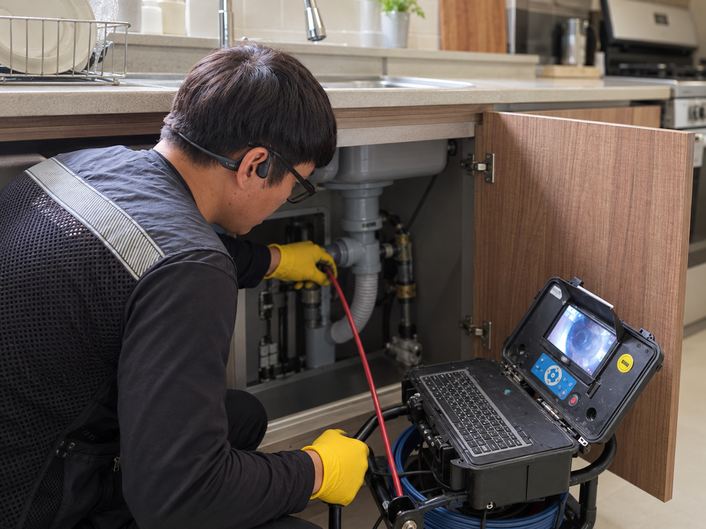
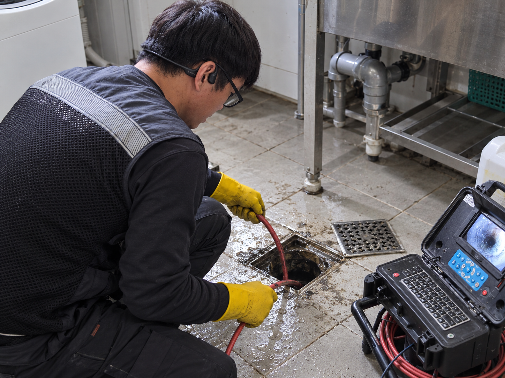
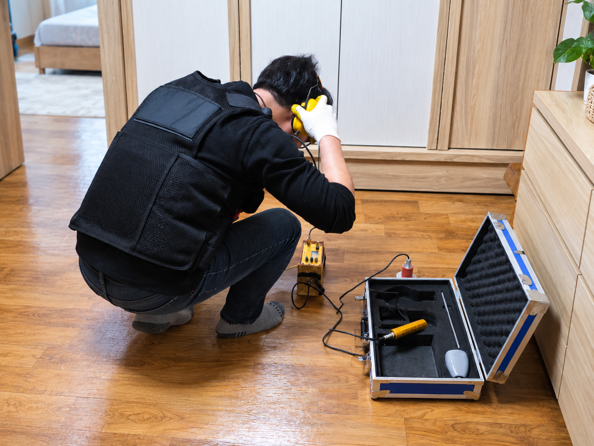
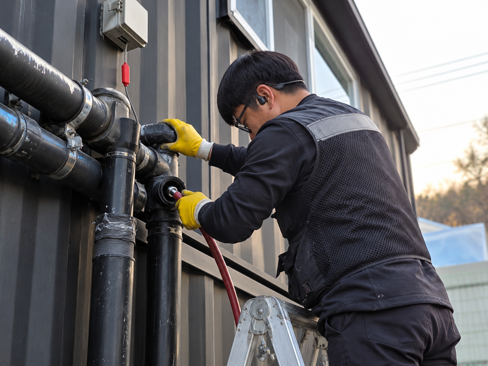
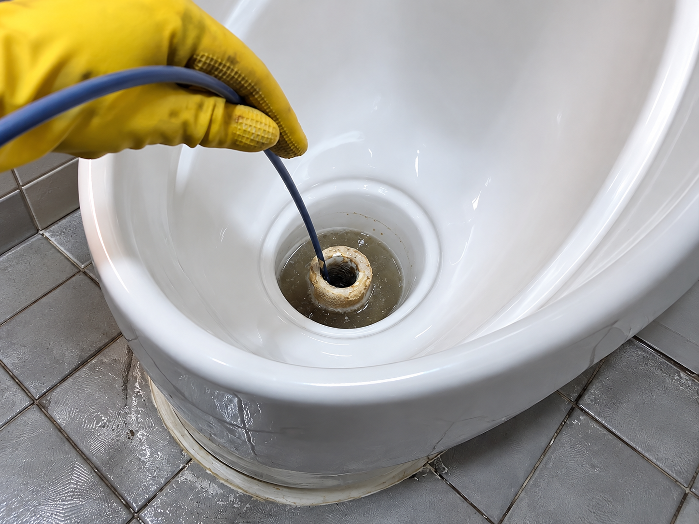

하수구·싱크대 막힘
뚜러뚜러하수구
막힌 위치와 원인에 따라 필요한 점검과 작업 방법은 달라집니다.




최적의 솔루션!
실제 현장에서 확인한 증상과 작업 내용을 사례별로 정리했습니다.

집수정 피트랩 막힘으로 역류가 발생해 석션 장비와 배관 스프링 장비로 큰 이물질을 제거하고 메인 배관 내부를 반복 세척했습니다.

배관 속 주름관과 각종 이물질을 제거해 막힌 구간을 정리하고 배수 상태를 확인했습니다.

소변기 내부에 쌓인 요석을 제거하고 배관 및 오수배관 청소를 진행해 악취 원인을 정리한 작업 사례입니다.
CONTACT
증상과 위치를 알려주시면 상담에 도움이 됩니다.
대표전화 010-4810-6897